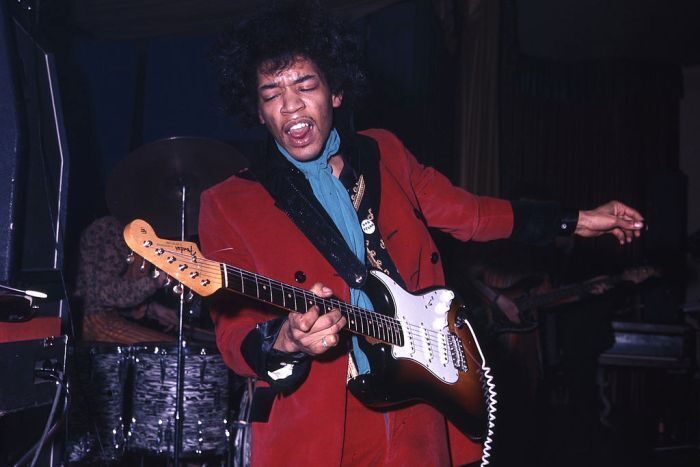

Widely recognized as one of the most creative and influential musicians of the 20th century, Jimi Hendrix pioneered the explosive possibilities of the electric guitar. Hendrix’s innovative style of combining fuzz, feedback and controlled distortion created a new musical form. Because he was unable to read or write music, it is nothing short of remarkable that Jimi Hendrix’s meteoric rise in the music took place in just four short years. His musical language continues to influence a host of modern musicians, from George Clinton to Miles Davis, and Steve Vai to Jonny Lang. Jimi Hendrix, born Johnny Allen Hendrix at 10:15 a.m. on November 27, 1942, at Seattle’s King County Hospital, was later renamed James Marshall by his father, James “Al” Hendrix. Young Jimmy (as he was referred to at the time) took an interest in music, drawing influence from virtually every major artist at the time, including B.B. King, Muddy Waters, Howlin’ Wolf, Buddy Holly, and Robert Johnson. Entirely self-taught, Jimmy’s inability to read music made him concentrate even harder on the music he heard.

Al took notice of Jimmy’s interest in the guitar, recalling, “I used to have Jimmy clean up the bedroom all the time while I was gone, and when I
would come home I would find a lot of broom straws around the foot of the bed. I’d say to him, `Well didn’t you sweep up the floor?’ and he’d say,
`Oh yeah,’ he did. But I’d find out later that he used to be sitting at the end of the bed there and strumming the broom like he was playing a guitar.
” Al found an old one-string ukulele, which he gave to Jimmy to play a huge improvement over the broom.
By the summer of 1958, Al had purchased Jimmy a five-dollar, second-hand acoustic guitar from one of his friends. Shortly thereafter, Jimmy joined
his first band, The Velvetones. After a three-month stint with the group, Jimmy left to pursue his own interests. The following summer, Al purchased Jimmy
his first electric guitar, a Supro Ozark 1560S; Jimi used it when he joined The Rocking Kings.
In 1961, Jimmy left home to enlist in the United States Army and in November 1962 earned the right to wear the “Screaming Eagles” patch for the paratroop
division. While stationed at Fort Campbell, Kentucky, Jimmy formed The King Casuals with bassist Billy Cox. After being discharged due to an injury he received
during a parachute jump, Jimmy began working as a session guitarist under the name Jimmy James. By the end of 1965, Jimmy had played with several marquee acts,
including Ike and Tina Turner, Sam Cooke, the Isley Brothers, and Little Richard. Jimmy parted ways with Little Richard to form his own band, Jimmy James and
the Blue Flames, shedding the role of back-line guitarist for the spotlight of lead guitar.
Throughout the latter half of 1965, and into the first part of 1966, Jimmy played the rounds of smaller venues throughout Greenwich Village, catching up with
Animals’ bassist Chas Chandler during a July performance at Caf‚ Wha? Chandler was impressed with Jimmy’s performance and returned again in September 1966 to
sign Hendrix to an agreement that would have him move to London to form a new band.
Switching gears from bass player to manager, Chandler’s first task was to change Hendrix’s name to “Jimi.” Featuring drummer Mitch Mitchell and bassist Noel
Redding, the newly formed Jimi Hendrix Experience quickly became the talk of London in the fall of 1966.
The Experience’s first single, “Hey Joe,” spent ten weeks on the UK charts, topping out at spot No. 6 in early 1967. The debut single was quickly followed by
the release of a full-length album Are You Experienced, a psychedelic musical compilation featuring anthems of a generation. Are You Experienced has remained
one of the most popular rock albums of all time, featuring tracks like “Purple Haze,” “The Wind Cries Mary,” “Foxey Lady,” “Fire,” and “Are You Experienced?”
Although Hendrix experienced overwhelming success in Britain, it wasn’t until he returned to America in June 1967 that he ignited the crowd at the Monterey
International Pop Festival with his incendiary performance of “Wild Thing.” Literally overnight, The Jimi Hendrix Experience became one of most popular and
highest grossing touring acts in the world. Hendrix followed Are You Experienced with Axis: Bold As Love. By 1968, Hendrix had taken greater control over
the direction of his music; he spent considerable time working the consoles in the studio, with each turn of a knob or flick of the switch bringing clarity
to his vision.